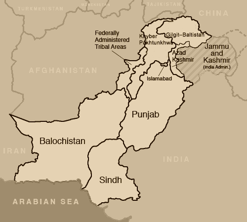
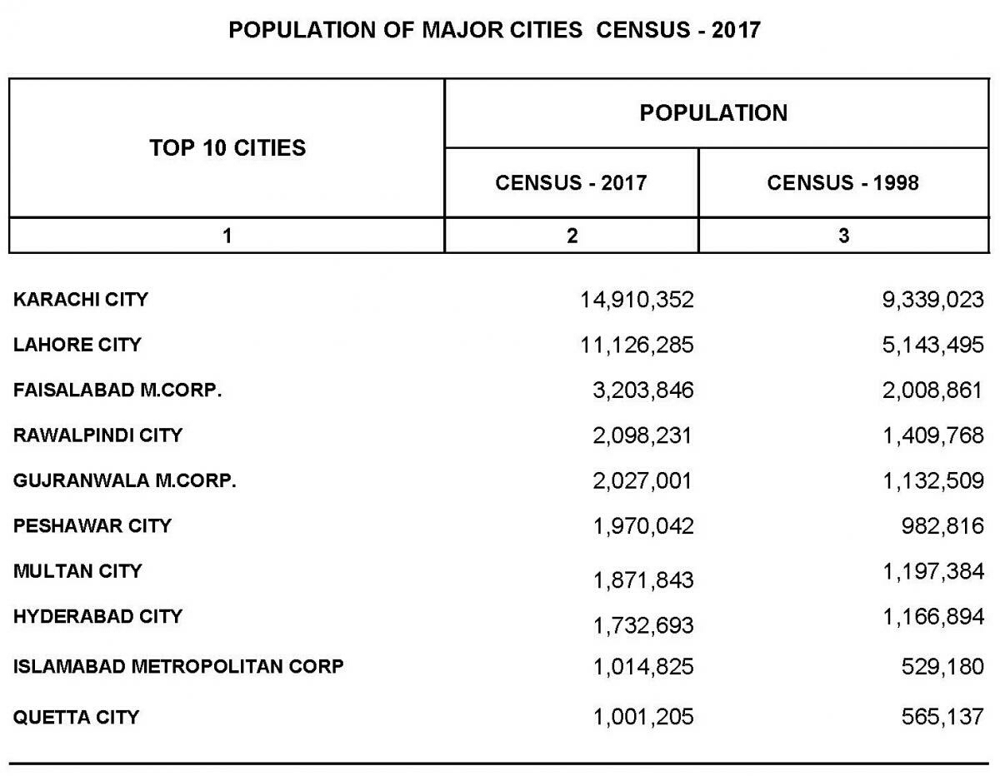

Provinces of Pakistan

A province is a region within a country. If you travel to Pakistan, you'll have to decide whether you want to go to the province of Punjab, Sindh, KPK, Balochistan, Gilgit Baltistan. Many countries are divided into provinces.
Pakistan has 5 provinces, These are Punjab, Sindh, KPK, Balochistan, and Gilgit Baltistan of which Gilgit Baltistan is a de facto province which means it acts like a Province even if it is not recognized as a Province by law. Azad Jammu and Kashmir or Azad Kashmir is a nominally self-governing polity administered by Pakistan. The Federally Administered Tribal Areas/FATA is a semi-autonomous tribal region in northwestern Pakistan, consisting of seven tribal agencies (districts) and six frontier regions, and are directly governed by Pakistan's federal government, Both Islamabad Capital territory and Azad Kashmir are Pakistan's 2 federal territories.
Major Cities of Pakistan

Islamabad
It is the capital city of Pakistan perhaps one of the most beautiful cities in Pakistan. With a population of 2.01 million, it is the 9th largest city of Pakistan, while the larger Islamabad-Rawalpindi metropolitan area is the third largest in Pakistan with a population exceeding four million.
Lahore
It is the capital city of the Pakistani province of Punjab, and is the country’s second-most populous city after Karachi. Lahore is very rich in its heritage and culture, and is one of Pakistan's wealthiest cities with an estimated GDP of $58.14 billion (PPP) as of 2014. Lahore is one of Pakistan's most socially liberal, progressive, and cosmopolitan cities. It is called the "Heart of Pakistan", and "Paris of the East".
Karachi
Karachi is the capital of the Pakistani province of Sindh. It is the most populous city in Pakistan, sixth most populous city in the world and the 8th most populous metropolitan city in the world, and the city is Pakistan's premier industrial and financial centre. Karachi is also Pakistan's most cosmopolitan city. Situated on the Arabian Sea, Karachi serves as a transport hub, and is home to two of Pakistan's two largest seaports, the Port of Karachi and Port Bin Qasim, as well as the busiest airport in Pakistan.
Gujranwala
It is a city in the Punjab, Pakistan, that is located north of the nearby provincial capital of Lahore. The city is Pakistan's 7th most-populous metropolitan area, and its 5th most populous city proper. Gujranwala is now Pakistan's third largest industrial centre after Karachi and Faisalabad, and contributes 5% of Pakistan's national GDP.
Faisalabad
It is the third-most-populous city in Pakistan, and the second-largest in the eastern province of Punjab. Historically one of the first planned cities within British India, it has long since developed into a cosmopolitan metropolis. Faisalabad has grown to become a major industrial and distribution centre because of its central location in the region and connecting roads, rails, and air transportation. It has been referred to as the "Manchester of Pakistan". Faisalabad contributes over 20 percent of Punjab's GDP, and has an average annual GDP of $20.5 billion. Agriculture and industry remain its hallmark.
Rawalpindi
Islamabad's twin city, Rawalpindi is the fourth-largest city in Pakistan by population, while the larger Islamabad Rawalpindi metropolitan area is the country's third-largest metropolitan area. Rawalpindi is located on the Pothohar Plateau, known for its ancient heritage, especially in the neighbouring town of Taxila - a UNESCO World Heritage Site.
Sialkot
Sialkot is Pakistan's 12th most populous city, and is located in north-east Punjab — one of Pakistan's mostly highly industrialised regions. Along with the nearby cities of Gujranwala and Gujrat, Sialkot forms part of the so-called Golden Triangle of industrial cities with export-oriented economies. It is famous for its made sports equipment. The city has been noted by The Economist for its entrepreneurial spirit, and productive business climate that have made Sialkot an example of a small Pakistani city that has emerged as a "world-class manufacturing hub."
Hyderabad
It
is a city located in the Sindh province of Pakistan. Located 140 kilometers east of Karachi, Hyderabad is the 2nd largest in Sindh province, and the 8th largest city in Pakistan. The city was named in honour of Ali, the fourth caliph and cousin of the Prophet Muhammad. Hyderabad's name translates literally as "Lion City" - from haydar, meaning "lion," and ābād, which is a suffix indicating a settlement. "Lion" references Ali's valour in battle, and so he is often referred to as Ali Haydar, roughly meaning "Ali the Lionheart," by South Asian Muslims.
Peshawar
It is the capital of the Pakistani province of Khyber Pakhtunkhwa/KPK, It also serves as the administrative centre and economic hub for the Federally Administered Tribal Areas. Situated in a broad valley near the eastern end of the historic Khyber Pass, close to the border with Afghanistan, Peshawar's recorded history dates back to at least 539 BCE, making it the oldest city in Pakistan and one of the oldest in South Asia, The city of Peshawar has a population of 1,970,042 according to the 2017 census, making it the largest city in Khyber Pakhtunkhwa and the sixth-largest in Pakistan, while Peshawar District has a population of 4,269,079.
Multan
It
is a Pakistani city and the headquarters of Multan District in the province of Punjab. Located on the banks of the Chenab River, Multan is Pakistan's seventh most populous city, and is the premier cultural and economic centre of southern Punjab.
Quetta
It is the provincial capital and largest city of Balochistan, Pakistan. It has a population of 1,001,205 according to the 2017 census, while Quetta District has a population of 2,275,699. The city is known as the fruit garden of Pakistan, due to the numerous fruit orchards in and around it, and the large variety of fruits and dry fruits produced there. The immediate area has long been one of pastures and mountains, with varied plants and animals relative to the dry plains to the west. Quetta is at an average elevation of 1,680 meters (5,510 feet) above sea level, making it Pakistan's only high-altitude major city.
Muzaffarabad
It is the capital of the Pakistani territory of Azad Kashmir. The city is located in Muzaffarabad District near the confluence of the Jhelum and Neelum rivers. The district is bounded by the province of Khyber-Pakhtunkhwa in the west. Kashmir is paradise on earth, the land is full of natural beauty, high mountains, lush green valleys, lakes, rivers, ancient forts, and many more worth seeing places.
Gilgit
It is the capital city of the Gilgit-Baltistan region, an administrative territory of Pakistan. The city is located in a small valley near the confluence of the Gilgit River and Hunza River. Gilgit is a major tourist destination in northern Pakistan, and serves as a hub for mountaineering expeditions in the Karakoram Range. It was an important stop on the ancient Silk Road, and today serves as a major junction along the Karakoram Highway with road connections to China, while to Pakistani cities of Skardu, Chitral, and Islamabad.